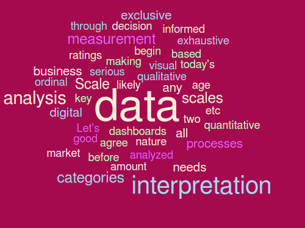

image source:
Ryzhi
via Shutterstock

Data Science:
It's all about the art
"Science is knowledge that we understand so well that we can teach it to a computer;
and if we don't fully understand something, it is an art to deal with it."
--Donald Knuth, Computer Programming as an Art

Article:
To put things into perspective,
1 Exabyte (10^18) of data
is created on the internet daily,
amounting to roughly the equivalent
of data in 250 million DVDs. Humankind
produces in two days the same amount
of data it took from the dawn of
civilization until 2003 to generate, and
as the Internet of Things becomes a
reality and more physical objects
become connected to the internet, we will
enter the Brontobyte (10^27) Era.
Scholars continue to contest the methods used in the emerging field that encompasses analytics, big
data, business intelligence, computational prediction, and data science. The standard methods for
analytics projects that use large data sets are statistical modeling and algorithms. Quantitative methods
have been reliably consistent for structured quantitative data, yet the many unstructured data sets that
feed analytics are different. Their underlying observations are subject to change in ways the researcher
cannot determine. The need to interpret and contextualize data is an essential but rarely discussed
aspect of analytics. Google Flu Trends illustrates the role of interpretation
in data analytics. The increasingly skewed flu predictions were due, in part, to the researchers' failure to
interpret the reliability of their data sources.
Interpretation is central to naturalistic forms of inquiry. Naturalistic inquiry stems from ethnography, field work or observations of uncontrolled environments where an objective truth
cannot be assumed. Rubin and Rubin, in "Qualitative Interviewing: The Art of
Hearing Data," describe naturalistic inquiry as the generation of data through encounters between
participant and researcher. Considering analytics from a naturalistic perspective is in direct opposition to
its more common association with quantitative scientific methods.
The most significant difference is that the naturalistic researcher generates data and serves as the sole
research instrument. However, both analytics and naturalistic researchers select from a range of found
data they happen to encounter. Additionally, the reduction of large collections of words is difficult to
convey to critics, whether it is from thick description or big data.

To emphasize both the interpretive responsibility of the analyst and the contextual aspects of the
data, "interviewing data" is introduced as an assessment tool. It is the responsibility of the person using
the data to identify inherent preferences and biases. Interviewing data is described as a
series of journalistic questions that can be applied to understanding data. This approach is suitable for
researchers with intimate access to the data set who need to convey its reliability.
This essay continues a strain of research that calls for increased attention to agency in big data
analytics. Like naturalistic researchers, data analysts play a
role in making decisions that impact the outcome, but often without accountability. Intellectual debate and
scientific skepticism are hindered if those without access to the data have no way to evaluate the results.
Interviewing data is one step towards challenging the assumption that all found data can be used without
interpretation.
source
Top